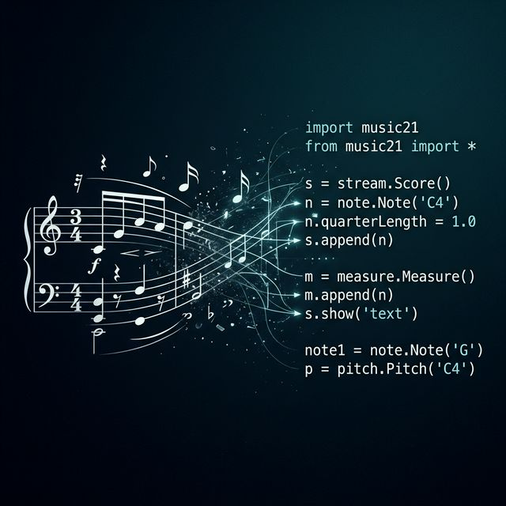

// musicoloxía · Python · metodoloxía · investigación
Music21: método computacional aplicado á musicoloxía

Music21 é un conxunto de ferramentas de Python para a musicoloxía computacional, desenvolvido no MIT desde 2008. Permite estudar conexións de datos musicais a gran escala, xerar exemplos musicais, impartir teoría musical, editar notación e compor música —tanto algoritmicamente como de xeito directo— sen necesidade de experiencia avanzada en programación.
Que é Music21?
Music21 é un conxunto de ferramentas baseado en Python para a musicoloxía computacional. A aplicación creouse no ano 2008 e desde entón converteuse nun estándar de referencia na investigación musical asistida por computadora. Entre as súas capacidades principais figuran:
- Estudar e analizar grandes cantidades de datos musicais interconectados.
- Xerar exemplos musicais de xeito programático ou directo.
- Impartir e visualizar os fundamentos da teoría musical.
- Editar notación musical en formatos estándar (MusicXML, MIDI, ABC, Kern…).
- Compor música algorítmica ou asistida por computadora.
Os autores
O MIT e o centro de investigación de Music21
O 21 do nome music21 fai referencia ás súas orixes como proxecto do MIT: no Instituto, todos os cursos teñen número, e a música —xunto con outros departamentos de humanidades— está numerada 21. Os departamentos de música do MIT, Harvard, Smith e Mount Holyoke contribuíron a facer medrar este conxunto de ferramentas desde as súas raíces máis sinxelas até un sistema maduro e de referencia mundial.
Que pode facer Music21?
Para comezar a utilizar Music21 non se necesita unha gran experiencia en programación, aínda que é recomendable ter uns coñecementos mínimos de Python para comprender os algoritmos implementados. Tras importar a biblioteca, pódese representar unha nota de xeito inmediato:
from music21 import *
# Crear e visualizar unha nota Ré sostido cunha duración de branca
n = note.Note('D#')
n.duration.type = 'half' # valores: whole, half, quarter, eighth…
n.show()Na primeira liña importamos todos os módulos de Music21. Créase o obxecto Note coa nota desexada en notación anglosaxona ('D#' = ré sostido). A duración asígnase como cadea de texto. O método .show() abre a partitura no visor configurado (MuseScore, Lilypond…).
Para traballar cunha frase musical completa, Music21 ofrece o módulo converter, que carga música desde múltiples formatos (MIDI, MusicXML, ABC, Kern, texto TinyNotation, URL…) e os converte en obxectos Music21. O seguinte exemplo crea unha melodía breve mediante TinyNotation:
from music21 import *
# TinyNotation: '4/4' é o compás; cada nota vai seguida da súa duración en fracciones
littleMelody = converter.parse("tinynotation: 4/4 c4 d8 e8 f4 g4 a2")
# Visualizar como partitura gráfica
littleMelody.show()
# Ou reproducir como MIDI
littleMelody.show('midi')A función converter.parse() acepta TinyNotation como cadea de texto: el compás seguido de as notas con indicación de duración (4=negra, 8=corchea, 2=branca…). .show('midi') activa a reprodución MIDI directa.
Análise de música do século XX
As técnicas analíticas aplicables á música do século XX teñen en Music21 unha ferramenta de primeiro orde. Por exemplo, é posible xerar a matriz de series de doce tons a partir dunha composición de Arnold Schoenberg, ou calcular a frecuencia de aparición de distintas alturas nunha obra do século XIV. O seguinte exempl o mostra como analizar a distribución de tons nunha obra dodecafónica:
from music21 import *
# Cargar o Cuarteto de cordas op. 25 de Schoenberg desde o corpus integrado
schoenberg = corpus.parse('schoenberg/opus25')
# Extraer a serie de tons do tema inicial
part = schoenberg.parts[0]
notes = part.flatten().notes.stream()
# Mostrar a matriz de series (tone row matrix)
row = serial.pcToToneRow([2, 3, 9, 1, 11, 5, 8, 7, 6, 10, 4, 0])
row.matrix().show('text')Music21 inclúe módulos especializados de análise dodecafónica (serial), tonalidade (tonal), ritmo e estrutura. A matriz de series mostra todas as transformacións canónicas (orixinal, inversión, retrogradación e inversión retrogradada).
De xeito similar, pódese investigar a frecuencia de aparición de distintas alturas nunha composición, o que resulta especialmente útil no estudo da música do Medievo ou do Renacemento:
from music21 import *
# Cargar unha peza do século XIV do corpus de Music21
piece = corpus.parse('ciconia/quod_jactatur')
# Calcular a distribución de clases de ton (pitch class distribution)
pitches = piece.flatten().pitches
from collections import Counter
dist = Counter(p.name for p in pitches)
for pitch, count in dist.most_common():
print(f"{pitch}: {count}")O método .flatten().pitches extrae todas as notas da partitura (sen importar a parte ou o compás) como obxectos Pitch. A distribución resultante revela o centro tonal e os modos utilizados.
O corpus integrado: os corais de Bach
Algúns dos exemplos máis ilustrativos de Music21 traballan sobre o seu corpus integrado: miles de pezas de libre uso listas para analizar, entre as que destacan todos os corais de Bach, obras de Monteverdi, Josquin, Palestrina, e moitas outras. No seguinte exemplo, accédese ao coral de Bach BWV 295 e engádese o nome alemán de cada nota como anotación lírica, o que resulta especialmente útil en contextos de educación musical:
from music21 import *
# Cargar o coral BWV 295 de J.S. Bach desde o corpus
bwv295 = corpus.parse('bach/bwv295')
# Engadir o nome de nota en alemán como anotación sobre cada nota
for thisNote in bwv295.recurse().notes:
thisNote.addLyric(thisNote.pitch.german)
# Mostrar a partitura resultante co visor configurado
bwv295.show()O método .recurse().notes percorre todas as partes e compases da partitura. .pitch.german devolve o nome alemán da nota (ex.: B → H, Bb → B), fundamental para o estudo da teoría musical xermánica.
Para comezar con Music21
Music21 pode ser unha ferramenta simple de usar, mais tamén extremadamente poderosa. Como calquera software especializado —de Photoshop a AutoCAD, de Excel a Max/MSP—, presenta unha curva de aprendizaxe que, no caso de Music21, é suave en comparación coa súa capacidade analítica. Para usalo é necesaria certa familiaridade con Python, amplamente considerado como un dos idiomas de programación máis accesibles e habitualmente o primeiro que se aprende en contextos académicos. Non é preciso ser un/ha programador/a experimentado/a: con unhas nocións básicas pódese comezar a explorar a música de xeito completamente novo.
Non é necesario un gran coñecemento de programación para comezar. Só un pouco de Python, e xa se poderá explorar a música de novas maneiras con Music21.
A instalación é sinxela mediante pip:
pip install music21Ademais, Music21 intégrase perfectamente con Jupyter Notebooks, o que o converte nunha ferramenta ideal tanto para a investigación musicolóxica como para o ensino interactivo en conservatorios e universidades.
Fonte e recursos
- Cuthbert, M. S. e Ariza, C. (2010). Music21: A Toolkit for Computer-Aided Musicology and Symbolic Music Data. Proceedings of the 11th International Society for Music Information Retrieval Conference (ISMIR 2010), 637–642.
- Web oficial de Music21: web.mit.edu/music21
- Documentación e tutoriais: music21.readthedocs.io